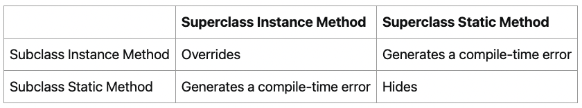
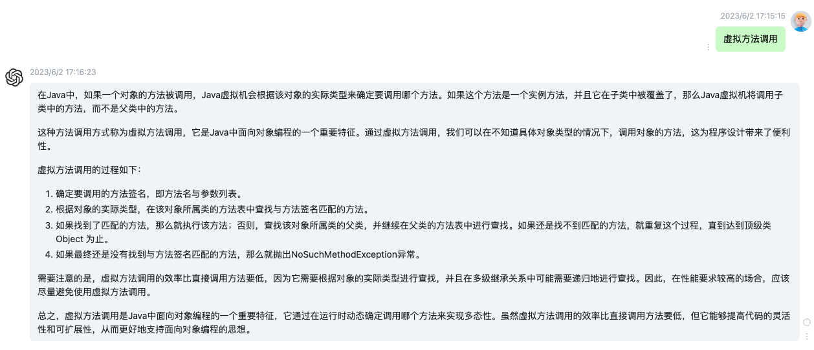
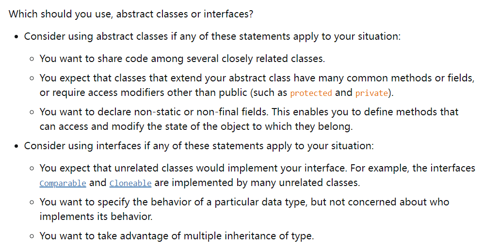

【官方】Java官方笔记6继承¶

继承¶
Java只有单继承，最顶级的父类是Object。
子类会继承父类的fields和methods，而不会继承constructors，因为constructors不属于methods，但是子类可以通过super调用父类的constructor。
子类继承父类的范围是：public、protected、package-private
隐式转换，子类转父类（只有1个爸爸）：
Object obj = new MountainBike();
显示转换，父类转子类（有多个子女，所以要明确指定）：
MountainBike myBike = (MountainBike)obj;
类有field，而接口没有，所以在多继承时就有问题：如果多个类有相同的field，那么子类将不知道用哪一个，而接口不存在这个问题。Java不支持继承多个类，但是可以实现多个接口。
重载¶
子类的方法跟父类有完全相同的签名和返回类型（也可以是子类），将会覆盖父类方法Override。
如果子类定义了1个static方法，跟父类完全相同，那么父类方法会被隐藏Hide。
Override和Hide是不同的：
public class Animal {
public static void testClassMethod() {
System.out.println("The static method in Animal");
}
public void testInstanceMethod() {
System.out.println("The instance method in Animal");
}
}
public class Cat extends Animal {
public static void testClassMethod() {
System.out.println("The static method in Cat");
}
public void testInstanceMethod() {
System.out.println("The instance method in Cat");
}
public static void main(String[] args) {
Cat myCat = new Cat();
Animal myAnimal = myCat; // 隐式转换
Animal.testClassMethod(); // 调的父类
myAnimal.testInstanceMethod(); // 父类对象引用，还是调的子类
}
}
The static method in Animal
The instance method in Cat
Override只会调子类方法，而Hide取决于调用方是父还是子，比如这里的myCat，隐式转换为父类Animal后，会调父类的static方法，而调的实例方法却是子类的。（如果不是隐式转换，而是直接给父类实例化，那肯定还是调父类方法）
类instance方法优先于接口default方法：
public class Horse {
public String identifyMyself() {
return "I am a horse.";
}
}
public interface Flyer {
default public String identifyMyself() {
return "I am able to fly.";
}
}
public interface Mythical {
default public String identifyMyself() {
return "I am a mythical creature.";
}
}
public class Pegasus extends Horse implements Flyer, Mythical {
public static void main(String... args) {
Pegasus myApp = new Pegasus();
System.out.println(myApp.identifyMyself());
}
}
输出为I am a horse.
Override的优先：
public interface Animal {
default public String identifyMyself() {
return "I am an animal.";
}
}
public interface EggLayer extends Animal {
default public String identifyMyself() {
return "I am able to lay eggs.";
}
}
public interface FireBreather extends Animal { }
public class Dragon implements EggLayer, FireBreather {
public static void main (String... args) {
Dragon myApp = new Dragon();
System.out.println(myApp.identifyMyself());
}
}
输出为I am able to lay eggs
如果实现多接口，有同名的，需要显示指定调用方：
public interface OperateCar {
// ...
default public int startEngine(EncryptedKey key) {
// Implementation
}
}
public interface FlyCar {
// ...
default public int startEngine(EncryptedKey key) {
// Implementation
}
}
public class FlyingCar implements OperateCar, FlyCar {
// ...
public int startEngine(EncryptedKey key) {
FlyCar.super.startEngine(key); // 显示指定，并且使用super
OperateCar.super.startEngine(key);
}
}
总结下，如果子类方法签名+return跟父类方法一样，有以下4种情况：

注意compile-time error，static方法不能和instance方法一样，因为它们是不同级别的。
多态¶
MountainBike和RoadBike都继承Bicycle，虽然都有printDescription，但它们有多样的形态：
public class MountainBike extends Bicycle {
private String suspension;
public MountainBike(
int startCadence,
int startSpeed,
int startGear,
String suspensionType){
super(startCadence,
startSpeed,
startGear);
this.setSuspension(suspensionType);
}
public String getSuspension(){
return this.suspension;
}
public void setSuspension(String suspensionType) {
this.suspension = suspensionType;
}
public void printDescription() {
super.printDescription();
System.out.println("The " + "MountainBike has a" +
getSuspension() + " suspension.");
}
}
public class RoadBike extends Bicycle{
// In millimeters (mm)
private int tireWidth;
public RoadBike(int startCadence,
int startSpeed,
int startGear,
int newTireWidth){
super(startCadence,
startSpeed,
startGear);
this.setTireWidth(newTireWidth);
}
public int getTireWidth(){
return this.tireWidth;
}
public void setTireWidth(int newTireWidth){
this.tireWidth = newTireWidth;
}
public void printDescription(){
super.printDescription();
System.out.println("The RoadBike" + " has " + getTireWidth() +
" MM tires.");
}
}
所谓的虚拟方法调用，名字很高大上，其实质就是，子类重载了父类方法，在调用子类实例方法时，先调子类实现：

注意，子类的field如果和父类的一样，那么父类的field会被hide，即使type不一样。如果要使用父类的field，需要关键字super。同名fileld是不好的设计，应该尽量避免。
super关键字
public class Superclass {
public void printMethod() {
System.out.println("Printed in Superclass.");
}
}
public class Subclass extends Superclass {
// overrides printMethod in Superclass
public void printMethod() {
super.printMethod();
System.out.println("Printed in Subclass");
}
public static void main(String[] args) {
Subclass s = new Subclass();
s.printMethod();
}
}
在子类constructor中，如果没有显式super，那么会调用默认的super()
Object¶
Java中的所有类，都终极继承了Object。（继承链的顶端）
toString()
System.out.println(firstBook.toString());
equals()
public class Book {
String ISBN;
public String getISBN() {
return ISBN;
}
public boolean equals(Object obj) {
if (obj instanceof Book)
return ISBN.equals((Book)obj.getISBN());
else
return false;
}
}
hashCode()
如果两个对象相等，那么它们的hashCode一定相等。重写equals()，必须重写hashCode()
getClass()
void printClassName(Object obj) {
System.out.println("The object's" + " class is " +
obj.getClass().getSimpleName());
}
clone()
aCloneableObject.clone();
finalize()
垃圾回收时调用。它的调用时机是不确定的，不要使用它来做逻辑。
抽象¶
abstract class，抽象类，不能被实例化，但是可以继承。
abstract void moveTo(double deltaX, double deltaY);
如果抽象类有method，那么也必须是abstract：
public abstract class GraphicObject {
// declare fields
// declare nonabstract methods
abstract void draw();
}
子类必须抽象类的所有方法，否则子类也必须是abstract。
抽象类：（not static、final） field，（public、protected、private） method
接口：public static final field，public method
Java中，抽象类的例子是AbstractMap、接口的例子是HashMap实现的Serializable, Cloneable, and Map<K, V>接口。

如果类没有实现接口中的所有方法，可以定义为abstract，然后由子类来实现剩余的全部方法：
abstract class X implements Y {
// implements all but one method of Y
}
class XX extends X {
// implements the remaining method in Y
}
X没有实现全部方法，所以是abstract，子类XX实现剩余全部方法。
参考资料：
Inheritance https://dev.java/learn/inheritance/